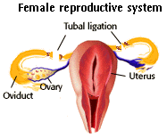

Human Reproduction Problem Set
Problem 12: Surgical sterilization of females
Tutorial to help answer the question
| Birth control in females by surgical sterilization generally involves cutting and tying the cut ends of the _________ |
Tutorial
Fallopian tubes
|
Female sterilization or tubal ligation consist of cutting out a small piece of the each oviduct. As with the male, the cut ends are tied off.
The eggs can no longer descend into the uterus and the sperm can no longer reach the egg. |
 |


University of Arizona
Updated: July 15, 1999
Contact the Development Team
http://biology.arizona.edu
All contents copyright © 1996-99. All rights reserved.